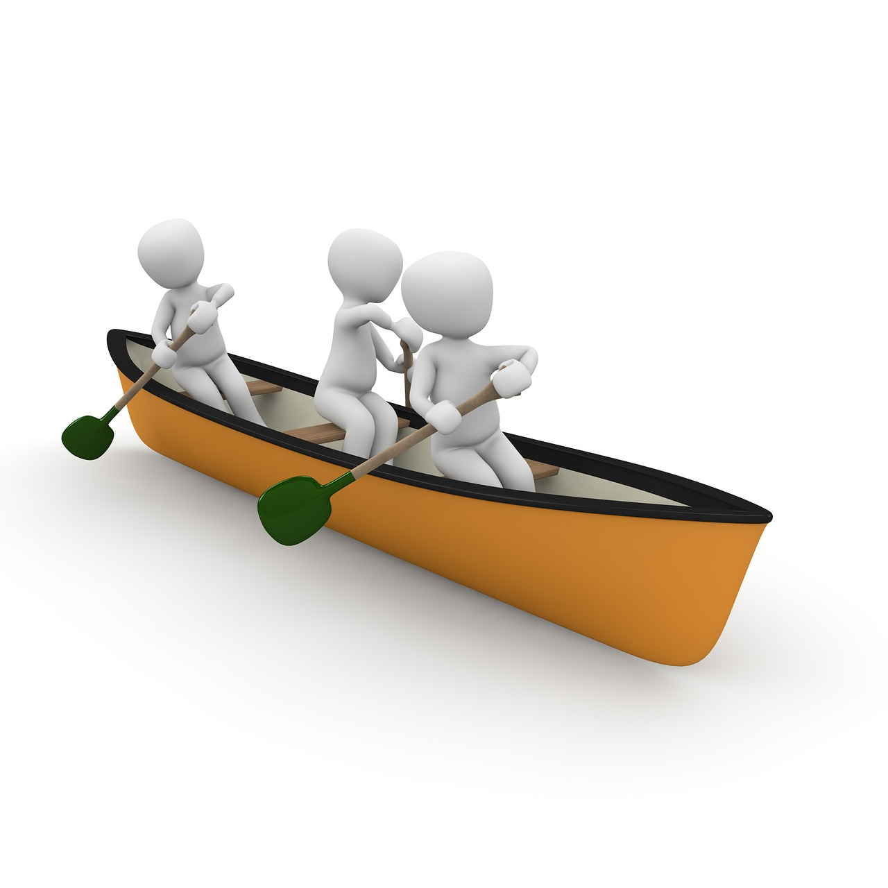

| Coup d'aviron | Définition | Qui? | Pourquoi? | Où? |
|---|---|---|---|---|
| La propulsion | « Coup de base permettant la propulsion avant du canot » | Canotiers avant et arrière | Pour se diriger vers l'avant en ligne droite | En rivière, mais surtout en lac |
| La rétropulsion | « Coup de base fait à l'inverse du coup de propulsion » | Canotiers avant et arrière | Pour ralentir une progression trop rapide ou pour reculer | Surtout en rivière |
| Le coup en «J» | « Coup de base permettant de corriger la trajectoire du canot en même temps qu'il assure la propulsion » | Le canotier arrière | Pour garder la direction droite | Surtout en lac ou encore en rivière large |
| Le coup d'appel | « Coup d'aviron qui ramène la pale dans l'eau de l'extérieur vers le plat-bord du canot » | Surtout le canotier avant, mais peut aussi être utilisé par le canotier arrière | Pour déplacer le canot vers le côté ou pour le faire pivoter sur lui-même | Surtout en rivière pour des déplacements à court rayon |
| Le coup d'écart | « Coup d'aviron qui repousse l'aviron du plat-bord vers l'extérieur » | Canotiers avant et arrière | Pour déplacer le canot de côté ou pour le faire pivoter | En rivière ou lors de déplacements à court rayon |
page d'accueil
